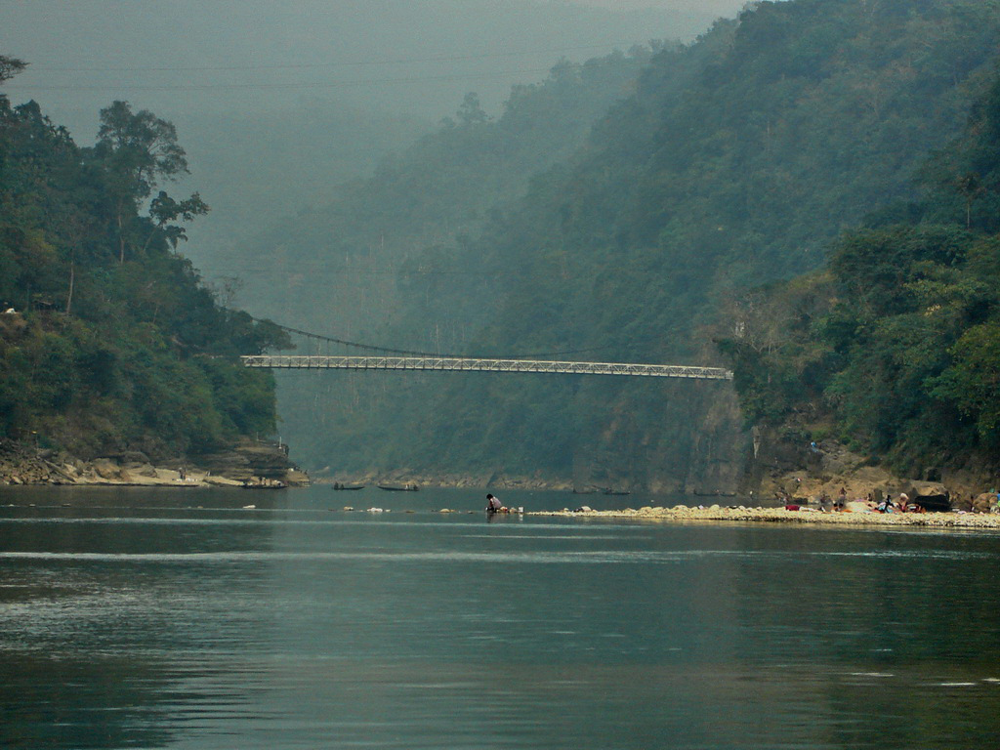
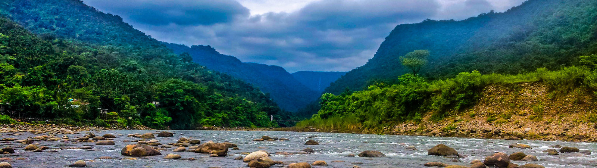
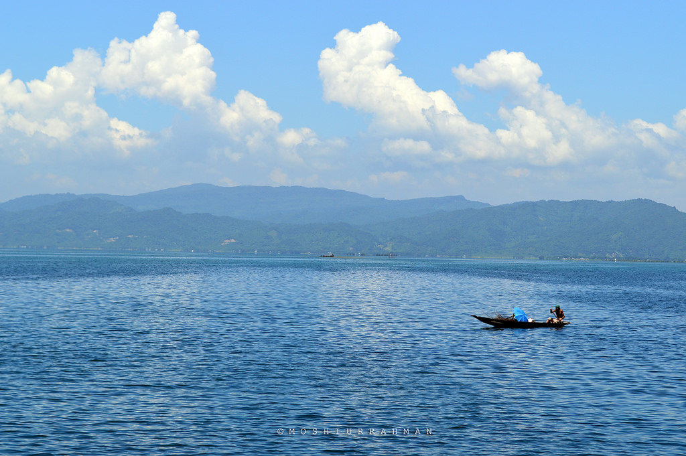
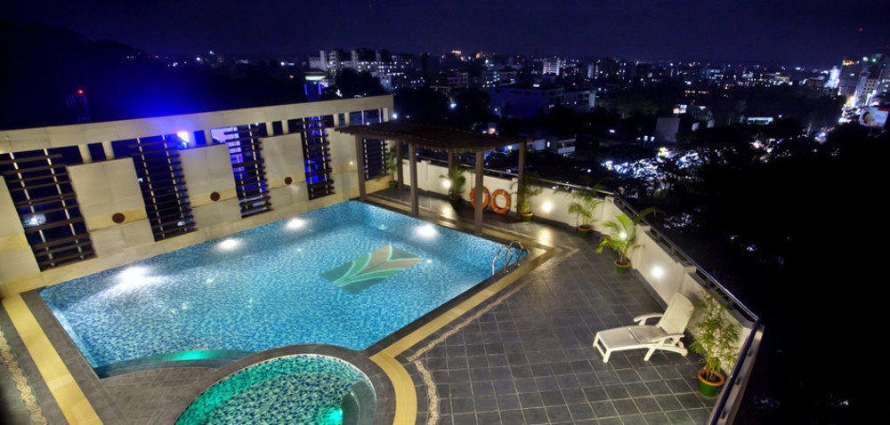

SYLHET
EXPLORE SYLHET
ABOUT
TSylhet /sɪlhət/, also known as Jalalabad, is a metropolitan city in northeastern Bangladesh. It is the administrative seat of Sylhet Division. The city is located on the right bank of the Surma River in northeastern Bengal. It has a subtropical climate and lush highland terrain. The city has a population of more than 800,000 residents.[4] Sylhet is one of Bangladesh's most important spiritual and cultural centers. It is one of the most important cities of Bangladesh, after Dhaka and Chittagong because due to its importance to the country's economy, as well as its status as a tourist destination. The city's dargahs, or burial sites of Muslim saints, draw several thousand devotees each year. The name of Sylhet is the anglicized form of the ancient Indo-Aryan term Srihatta.[5] In 1303, the Sufi Muslim leader Shah Jalal conquered Sylhet by defeating the local Hindu Raja.[6] Ibn Battuta visited Sylhet in the 14th century and saw Bengali Muslims transforming the region into an agricultural basket.[7] Sylhet was a mint town of the Bengal Sultanate. In the 16th-century, Sylhet was controlled by the Baro-Bhuyan zamindars and became a district of the Mughal Empire.[8] British rule began in the 18th century under the administration of the East India Company. With its ancient seafaring tradition, Sylhet became a key source of lascars in the British Empire. The Sylhet municipal board was established in 1867.[9] Originally part of the Bengal Presidency and later Eastern Bengal and Assam; the town was part of Colonial Assam between 1874 and 1947, when following a referendum and the partition of British India, it became part of East Bengal.[6] The Sylhet City Corporation was constituted in 2001. The Government of Bangladesh designated Sylhet a metropolitan area in 2009.[10] The hinterland of the Sylhet valley is the largest oil and gas-producing region in Bangladesh. It is also the largest hub of tea production in Bangladesh. It is notable for its high-quality cane and agarwood.[11][12] The city is served by the Osmani International Airport. People from Sylhet form a significant portion of the Bangladeshi diaspora, particularly in Britain.
CLIMATE
Sylhet is located at 24.8917°N 91.8833°E, in the north eastern region of Bangladesh within the Sylhet Division, within the Sylhet District and Sylhet Sadar Upazila. Sylhet has a typical Bangladesh tropical monsoon climate (Köppen Am) bordering on a humid subtropical climate (Cwa) at higher elevations. The rainy season from April to October is hot and humid with very heavy showers and thunderstorms almost every day, whilst the short dry season from November to February is very warm and fairly clear. Nearly 80% of the annual average rainfall of 4,200 millimetres (170 in) occurs between May and September.[29] The city is located within the region where there are hills and basins which constitute one of the most distinctive regions in Bangladesh. The physiography of Sylhet consists mainly of hill soils, encompassing a few large depressions known locally as "beels" which can be mainly classified as oxbow lakes, caused by tectonic subsidence primarily during the earthquake of 1762. It is flanked by the Indian states of the Meghalaya in the north, Assam in the east, Tripura in the south and the Bangladesh districts of Netrokona, Kishoregonj and Brahmanbaria in the west. The area covered by Sylhet Division is 12,569 km2, which is about 8% of the total land area of Bangladesh. Geologically, the region is complex having diverse sacrificial geomorphology; high topography of Plio-Miocene age such as Khasi and Jaintia hills and small hillocks along the border. At the centre there is a vast low laying flood plain of recent origin with saucer shaped depressions, locally called Haors. Available limestone deposits in different parts of the region suggest that the whole area was under the ocean in the Oligo-Miocene. In the last 150 years three major earthquakes hit the city, at a magnitude of at least 7.5 on the Richter Scale, the last one took place in 1918, although many people are unaware that Sylhet lies on the earthquake prone zone of Bangladesh.
AREAS OF SYLHET

RATARGUL SWAMP
JAFLONG
BISANAKANDI
TANGUAR HAOR
ACCOMODATIONS IN SYLHET
NIRVANA
PACIFIC